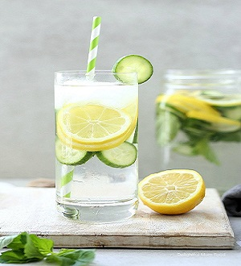
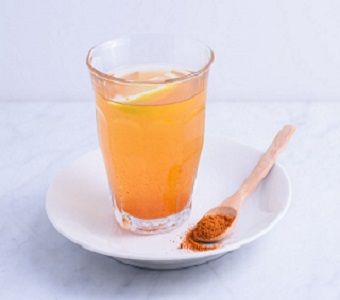
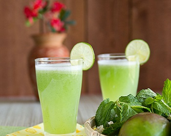
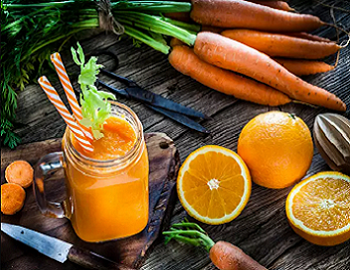
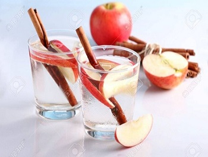

1. LEMON CUCUMBER WATER

// image of lemon cucumber water is added
Cucumbers are rich in water and fiber that reduces swelling. They help with digestion and flushing out the toxins in the body.
Lemons contain pectin fiber which helps to ward off hunger cravings.Also they contain vitamin C, which helps in increasingthe immunity. They actually detoxifies the blood which maintains skin’s radiance.
METHOD:
- Cut cucumber into pieces and then add it to the glass of water containing lemon juice and mint leaves, let them cool a lit in the fridge and have it , you can choose their quantity as per the glasses of water (eg. 1 glass of water can have 1/2 of lemon's juice and 1/2 cucumber's slices).
// easy and convenient recipes provided
2. APPLE CIDER VINEGAR DRINK
// image added
This apple cider vinegar drink contains strand-like chains of protein enzyme molecules that help regulate bacteria in the gastrointestinal. Raw apple cider vinegar such as this one contains acetic acid, which when consumed regularly, decreases abdominal fat.
METHOD:
- Take your glass of water and add 1/2 of a lemon’s juice to it, now further add 1 tsp apple cider vinegar to it and blend them and then your drink is ready.
3. LEMON CAYENNE PEPPER WATER

Cayenne pepper is fantastic to rev-up the metabolism. This drink has metabolism boosting ingredients and anti-inflammatory properties from adding fresh ginger, lemon juice and apple cider vinegar.When eaten for breakfast, Cayenne pepper can decrease your appetite, therefore consuming less food.
METHOD:
- Take your glass of water and add 1/4 tsp cayenne pepper, 1 tsp lemon juice, 1 tsp apple cider vinegar and 1 inch fresh ginger and then blend all of it.
- You can have it as it is or add a bit of sugar as all this makes the water spicy.
4. CHIA SEEDS AND GINGER WATER
The High Fiber and Protein content present in chia seeds helps you to loose weight .Also ginger decreases inflammation, stimulates digestion, and suppresses your appetite. These properties lead to weight loss.
METHOD:
// the method of recipe is provided step wise
- Put 1 tbsp chia seeds in 1 cup water and keep aside for 15-30 mins.
- Put the soaked chia seeds in a large glass bottle and add 1 sliced lemon and a small piece of cut ginger. Now add 1 litre of water and stir it.
- Leave for 3-4 hours and then your drink is ready.
5. RAW MANGO AND MINT WATER

Raw mangoes are good for digestion, which is significant for heavy weight loss.Mint stimulates digestive enzymes, which help facilitate better absorption of nutrients from food. When the body is able to assimilate nutrients properly, your metabolism improves. A faster metabolism aids weight loss.
METHOD:
- Take 1 sliced raw mango in a glass bottle and add some pink salt, mint and honey.
- Add 1 litre of water, stir well, leave it for 3 to 4 hours and your drink is ready.
// recipe of carrot water
6. CARROT, FENNEL AND MINT WATER

Low in calories and full of fibre, carrots provide us with both the benefits weight loss and good health. Mint stimulates digestive enzymes, which help facilitate better absorption of nutrients from food.
METHOD:
- Take 1 slice red carrot and 1 sliced orange ( or two of any 1) in the glass bottle and add 1 tbsp fennel seeds, 2 sprigs of mint and 1 litre of water.
- Stir all of this well, keep it aside for 3 to 4 hours and then have it after straining.
7. APPLE AND CINNAMON WATER

Cinnamon has been shown to reduce some of the bad effects of eating fattyfoods. Its effect on blood glucose levels can also help your body ultimately.
METHOD:
- Take 1 sliced apple (red / green) in a big glass jar and add 1/4 tsp cinnamon and 1litre of water.
- Keep it aside for 3 to 4 hours, strain it and have it.